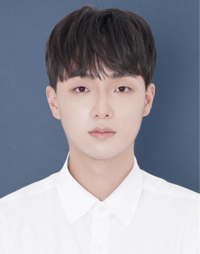

2026.03–present
Ph.D., Electrical Engineering · KAIST
CastLab, advised by Prof. Joo-Young Kim
Ph.D. Student · CastLab · KAIST
I work on AI accelerators, NPUs, and domain-specific architectures. During my M.S. I deliberately worked across domains — DNA sequencing, 3D rendering, processing-in-memory, and computer vision. My Ph.D. focuses on LLM inference systems.

2026.03–present
CastLab, advised by Prof. Joo-Young Kim
2024.03–2026.02
CastLab, advised by Prof. Joo-Young Kim
2019.03–2024.02
Double major in Bio and Brain Engineering
ISSCC ’27Circuit
PIXCEL: A 21.19 TOPS/W Bitwise Visual Autoregressive Accelerator with Convergence-Aware Dynamic Token Tiering and Scale-Calibrated Multi-Precision Computing Under Review
ASPLOS ’27Architecture
PATTON: Enabling Commodity PIM for Production LLM Serving Under Review
A-SSCC ’26Circuit
GAREN: A 890.9 FPS, 412 iter/s 3D Gaussian Splatting Rendering and Modeling Accelerator with Hybrid Sorting, Out-of-Range Filtering, and Gradient Skipping Highlight Paper
A-SSCC ’26Circuit
Trident: A 28nm 1.83-to-9.74 pJ/Bit Multi-Parameter FHE Processor with Unified Constant Geometry Datapath for Privacy Preserving Client-Server Computing Highlight Paper
VLSI ’26Circuit
Specter: 376 fps 2.67 nJ/pixel 4DGS Processor for Spatiotemporal Reconstruction with Contribution-Ordered Rendering and Deformation-aware Modeling
ISCA ’24Architecture
BLESS: Bandwidth and Locality Enhanced SMEM Seeding Acceleration for DNA Sequencing
TETCArchitecture
EssenSplat: Eliminating Tile- and Pixel-Level Redundancy in Gaussian-based Rendering Pipeline Under Review
arXivCircuit
RED: Energy Optimization Framework for eDRAM-based PIM with Reconfigurable Voltage Swing and Retention-aware Scheduling
Filed 2025
Volume Rendering Accelerator Based on Priority-Aware Hierarchical Skipping and Pivot-Delta Rendering for Efficient 3D Gaussian Splatting
KR 10-2025-0177964 · Application pending
Filed 2025
Redundant Gaussian Pruning Architecture via Opacity-Aware Radius Adjustment and Shape-Aware Hybrid Tile Allocation
KR 10-2025-0177965 · Application pending
2021.03–2022.02
2020.03–2023.02
2019.03–2021.02